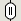

Select a site marker from the map below to display data from that collection site.
Select a site name from the list below to display data. Scroll to view complete list.
Last E. coli Result: MPN/100mL on
Interact with the timeline (trend data) by clicking on the left and/or right handle icons and dragging them towards the center of the timeline to filter all data by date range. Click in the middle of the range filter and drag along timeline to compare data for that date range. To interact with the column charts below for each parameter (E. coli, Turbidity, Rainfall, and Specific Conductivity) hover and click a column with your mouse to display data for the corresponding date.
* The current EPA water quality standard for a single freshwater sample is 126 MPN/100mL. E. coli levels above that standard may indicate contamination. For more information about water monitoring, visit Chattahoochee Riverkeeper.